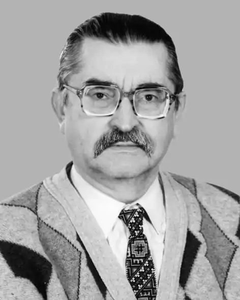
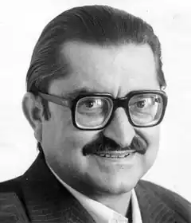

Анатолія Гарматюка називають подільським поетом — сміхотворцем, адже родом відомий гуморист із Вінниччини. Саме тут він прожив більшу частину свого земного життя і написав більшість своїх сатирично — гумористичних творів.
Народився відомий поет 14 січня 1936 року в с. Мигалівці Барського району на Вінниччині, в сім'ї вчителів.
Дитинство Анатолія Гарматюка припало на важкі воєнні та повоєнні роки. Приємними спогадами, що залишились на все його життя були бабусині теплі руки і мамина ласкава посмішка. Під час фашистської окупації сім'я перебувала у родичів на Хмельниччині. Після війни у 1946 році родина Гарматюків переїхала до Ужгорода, де хлопець успішно закінчив 6-й клас. Навчаючись у школі хлопчик любив читати, відвідував драмгурток. На цей період припадають і перші проби пера. Анатолій писав сценарії до шкільних вистав, вірші. 1949 року сім'я переїхала у м. Чортків Тернопільської області, куди батьків направили учителювати, і де вони пропрацювали до виходу на пенсію. У 1953 році Анатолій Гарматюк закінчив із золотою медаллю чортківську середню школу №1. В цьому ж році у районній газеті "Нове життя" був надрукований його перший вірш. Після закінчення школи Анатолій Гарматюк вступив до Київського політехнічного інституту, хоч мав право вступу без екзаменів до будь-якого вузу. Батьки порадили спочатку здобути професію, яка б дала можливість заробити на "шматок хліба", а вже потім, якщо з'явиться "іскра Божа", займатися літературою. Порада батьків стала вирішальною у виборі професії. Юнак став студентом гірничого факультету. Сумлінне навчання на цьому технічно складному факультеті було на першому місці, але природний талант до поезії спокою не давав. В його щоденнику за 17 червня 1954 р. є запис: "Сьогодні я продовжував готуватись до екзамену з фізики. Прийшов ранком в робочу кімнату, відкрив підручник, але відчув, що в мене аж через край б'є якесь поетичне піднесення, яке не дозволяє готуватись до екзамену. Довелось шукати якийсь вихід для цього піднесення. І з-під мого олівця вийшла пісня про Марусю…". В інституті Анатолій Гарматюк відвідував літературне об'єднання, був активним автором інститутської багатотиражки, куди подавав свої ліричні вірші, дописував замальовки зі студентського життя, присипані гумором. Тоді друзі пророчили йому великий успіх саме у прозовому гуморі. Закінчивши з відзнакою навчання у 1958 році, молодий інженер-гірник працював за фахом у кам'яних кар'єрах на Тернопільщині, в Молдові та інженером гірничого відділу проектного інституту в Донецьку. У Донецьку в грудні 1960 року Гарматюк познайомився з відомим тоді на весь Радянський Союз сатириком і гумористом Степаном Олійником. Після цієї зустрічі на все життя визначився з жанром: гумор і сатира. Через півроку проживання у Донецьку доля звела його з патріотично налаштованими україномовними літераторами-початківцями – Василем Стусом, Василем Захарченком, Володимиром Міщенком, Олегом Комаром (Орачем), Анатолієм Лазоренком, Миколою Колісником, Миколою Хижняком та ін. Входження в коло, яке зараз називають "Стусовим колом", а також природний поетичний талант, непереборний потяг до творчості прискорили вибір Анатолія Гарматюка. Навесні 1961 року він залишає проектний інститут і переходить на роботу кореспондентом до Донецького обласного радіо. Протягом 10 років займається журналістикою, працює редактором виробничо-технічної літератури видавництва "Донбас". 1963 року Анатолій Гарматюк вступив на заочне відділення філологічного факультету Донецького університету (тоді ще педінституту), дебютував збіркою сатири і гумору "Проти шерсті". Друга збірка "Лисяча наука" вийшла у 1966 році. Письменники А. Клоча, Є. Летюк, П. Шадур дають йому рекомендації для вступу до Спілки письменників. У 1967 р. у Донецьку почалося відкрите переслідування українських письменників-початківців: на протязі кількох місяців кожні 3-4 дні приїжджали на роботу і забирали на допити в КДБ, звинувачували в "антирадянській діяльності", "націоналізмі", залякували Сибіром, вимагали зізнання. Робилися обшуки. Від арешту врятував дзвінок Василя Стуса, який наче передчував, зателефонував В. Міщенку, в квартирі якого зберігалася заборонена література і проводилися збори української патріотичної молоді, й попередив: "Нічого вдома не тримай. Зберігай у родичів або знайомих" . Не знайшовши доказів для притягнення до кримінальної відповідальності, кадебешники вдалися до інших покарань: молодих україномовних літераторів, які працювали на журналістських посадах і відвідували квартиру Міщенка, з роботи звільнили. А. Гарматюка колектив видавництва "Донбас" за збігом обставин взяв на поруки. В кінці 1972 року Анатолій Гарматюк з сім'єю переїздить до Вінниці, але ні в газети, ні на радіо його на роботу не взяли, працював в Облспоживспілці, влаштувався інженером у Вінницьку міжрегіональну лабораторію "Держстандарт". З 1975 по 1991 рік — був завідувачем Кабінету молодого автора Вінницької організації Спілки письменників України, керував літературною студією "Сонячні кларнети" Вінницького ДПЗ-18. Лише у 1982 році став членом Спілки письменників. Гумористично-сатиричний напрямок творчості Гарматюка був гострою нелегальною зброєю народу в боротьбі із радянською тоталітарною державою і комуністичною ідеологією. Висміювання тогочасного ладу і вірність патріотичним поглядам, державна комуністична машина не могла подарувати молодому поету. Своєю громадянською позицією і природженим талантом гумору автор зумів згуртувати навколо себе багатьох однодумців. За ініціативою А. Гарматюка було започатковано проведення на Вінниччині свята Степана Руданського в с. Хомутинці та Калинівці, яке проводиться вже понад 30 років. Анатолій Панасович один з перших на Україні організував Вінницький курінь гумористів імені Степана Руданського, в якому об'єднав гумористів Вінниччини (авторів і виконавців). Курінь став асоційованим членом Міжнародної асоціації гумору і сатири "Весела Січ". На рідному Поділлі літературний талант поета-гумориста розквітнув. А. П. Гарматюк автор понад 30-ти книг, серед яких віршовані, публіцистичні твори, збірки для дітей, загалом його творча спадщина налічує 10 томів. Анатолій Гарматюк – лауреат літературних премій імені Степана Олійника, імені Микити Годованця, імені Степана Руданського, один з переможців Першого республіканського фестивалю гумору і сатири "Вишневі усмішки‖ (1980р.), неодноразово був переможцем республіканського конкурсу на кращі літературні твори для естради. У 2001 році став одним з переможців Всеукраїнського конкурсу "Байка-2001". Нагороджений Грамотою Президії Верховної Ради України (1986). Після його смерті видані ще сім авторських книг, дві збірки спогадів. На вшанування пам'яті у Чорткові на фасаді школи, в якій вчився Гарматюк, за рішенням сесії міської ради відкрита меморіальна дошка. З 2007 року у Вінниці проводиться щорічний конкурс гумору і сатири "Вінницька гуморина" імені А. П. Гарматюка. В Барському районі проводиться конкурс юних гумористів "Усміхніться, люди добрі!" імені А. П. Гарматюка. Починаючи з 2000 року кілька своїх книжок Анатолій Гарматюк видав безпосередньо у видавництві ВНТУ (до середини 2010 року мало назву "УНІВЕРСУМ-Вінниця)" чи у співпраці з ним.